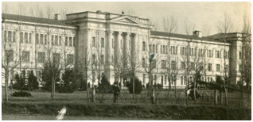
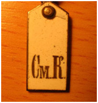

Сумской кадетский корпус был учрежден постановлением Военного совета 12 декабря 1899 г. и открыт 18 января 1900 г. Корпус был одним из самых молодых в России.

Здание Сумского кадетского корпуса. Почтовая открытка. 1900-е гг.
Своим возникновением Сумской кадетский корпус во многом обязан известному сахарозаводчику И.Г. Харитоненко, мечтой которого было открыть в родном корпусе кадетский корпус. Однако при жизни ему так и не удалось реализовать эту мечту. Это сделал его сын П.И. Харитоненко, который безвозмездно предоставил Военному ведомству 50 десятин земли и 500 000 рублей на постройку в Сумах кадетского корпуса. В память о И.Г. Харитоненко корпусной храм был освящен в честь Святого Иоанна Богослова 26 сентября 1902 г. – в день ангела И.Г. Харитоненко.
В 1906 г. великий князь Константин Константинович вручил Сумскому кадетскому корпусу знамя, которое в тот же было торжественно прибито к древку самим великим князем, директором и офицерским составом корпуса. В дальнейшем Константин Константинович неоднократно посещал Сумской кадетский корпус, вникал во все подробности его жизни, посещал учебные занятия, присутствовал на самодеятельных спектаклях, концертах, танцевальных вечерах.
Легендарным человек для кадет Сумского корпуса был генерал-лейтенант А.М. Сарачов, который возглавляя корпус на протяжении 14 лет много сделал для его развития, и был глубоко уважаем кадетами. В 1931 г. по случаю 31-й годовщины корпуса его выпускники направили А.М. Саранчову письмо, в котором, в частности, говорилось: «Пусть удовлетворением Вам будет сознание, что нет ни одного кадета Сумского корпуса, который не вспоминал бы с благодарностью, уважением и любовью имя своего дорого директора».
В 1917 г. очередного выпуска в корпусе не состоялось. В начале 1918 г. Сумской кадетский корпус был закрыт. Однако когда г. Сумы был занят войсками Скоропадского, гетман приказал открыть корпус под названием «Сумская войсковая бурса». В 1918 г. в Сумской корпус начали прибывать кадеты из разных городов, оказавшихся в зоне боевых действий. Среди них были и орловцы, и воронежцы, и москвичи, и кадеты 2-го и Морского корпусов из Санкт-Петербурга. В конце учебного года кадеты надеялись разъехаться по своим корпусам, однако еще до Рождества Сумской кадетский корпус под руководством А.М. Саранчова был эвакуирован в Киев, а потом – в Одессу.
В том же году в здании Сумского кадетского корпуса были открыты курсы красных командиров.

Погон кадета Сумского корпуса
К середине 1919 г. все оставшиеся выпускники Сумского кадетского корпуса собрались в Крыму, где был произведен ускоренный выпуск 1-й роты.
На этом Сумской кадетский корпус перестал существовать.